Remembering my trip to Europe
reflection travel
Sun Jul 26 2020 02:30:16 GMT-0500 (Central Daylight Time)I've been meaning to write all this down for quite some time now. One year ago today on July 26, 2019, I traveled to Europe with my now-ex-girlfriend (still today, one of my best friends), a couple of classmates and two teachers from my school on a trip through Europe. I truly regret not writing down my thoughts of the trip in a journal or something similar, but that regret is quite literally the reason I even made this site in the first place. However, I don't want my memories to fade and for me to forget how I felt on the trip, the things I experienced, and the people I met. So I'll be styling my thoughts in a similar way to a diary, but instead of my thoughts at the time, instead, they'll be my thoughts from now, June 10, 2020, almost a year later...
July 26, 2019
Arriving at the airport was one of the most nerve raking things in my life. I had flown a year prior to then home from North Carolina when visiting family, and even earlier then that, on a trip I took to the Bahamas with my dad for Boy Scouts. But this, this was me more nervous than ever before. I remember waiting in line just to get our boarding pass, I felt like I was going to puke, my girlfriend at the time, Heather tried to help me calm down. The funny part was (not at the time, but looking back), that was the BOARDING PASS line, we still had security, we had to actually check our bags and wait for the plane too. Thank god I brought Dramamine, I took some while waiting and it basically knocked me out for the whole flight.
The plane took off an around 3:43 PM CST (Yes I'm going to include timezones because this will be in local times to the counties I was in)...
Halfway into the flight (mind you it was an 8 and a half hour flight...) I woke up and couldn't fall asleep, Heather was beside me the whole time which kept me calm throughout the flight. I seriously hate flying so that would have been a nightmare if it was just me.
Honestly, looking back on the flight it was fun, but at the time I was still pretty on edge, but Heather kept me busy by playing 2048 on the plane, My teacher, Mr. Zerby was also next to us and he kept us busy chatting. Food came as part of the flight too since it was international and a good airline. So in the end I ended up not hating the flight as much as I expected!
July 27, 2019
We arrived in Munich, Germany (Our small layover) at around 7 AM CET. We hung around in the airport and hopped on the next flight at around 8 AM CET.
Unlike the flight before, this was a smaller flight, not as long, but also as a frightful flyer, not as comfortable. I drugged myself out with Dramamine again and let the world of sleep take me once more.
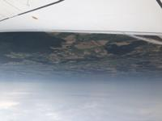
Upon arriving in our target Dublin, Ireland, we went and met our tour guide, Tom. I had actually forgotten how funny meeting him was. Initially, our teacher Mr, Zerby, his camera bags for the trip didn't arrive and so he told us to go ahead with our other teacher Ms. Apperson and meet with our guide and wait for him. It was a total of 8 of us, plus Ms. Apperson who went to meet our guide. But shes admittedly a young teacher and definitely looks it, so upon meeting our guide Tom, he thought asked where our teacher was. It was especially funny because I was the only guy other than Mr. Zerby who was there. Tom never let me live that down the whole trip... (Thank you, Tom, yes yes I know, lucky guy eh? I was there with my girlfriend, got it? so shush).
Anyways, we moved to a different area of the airport and waited for the other flights to come in (The trip was an "EF Tour" so it was an educational tour and the group also included some people from South Carolina, Texas, and an EF employee from Switzerland).
Eventually, we hopped on a bus and went to visit a small town called Howth (Pronounced like Hoth from StarWars). It was a cute little town that we got to wander around while we all got to meet one another and grab a bite since by now it was 1 PM CET and most of us were hungry.
 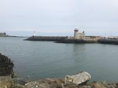
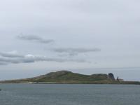
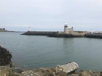
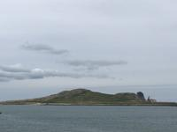
Then we drove through Dublin on a sight tour and went to a local museum library ~~which honestly I forget what it was called~~ Actually it was Trinity College, that's what it was! But it was pretty amazing to see the original copies of different books by philosophers.
 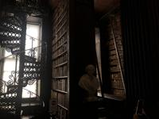
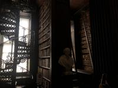
Alas, we then had to return back to our hotel to get sorted into our room groups and eat some tasty dinner! (Not me, I actually still felt sick to my stomach from the flying earlier in the day plus the jetlag... I didn't eat...)
*Anyways*, I got roomed with two guys from Texas, I'm afraid, to be honest, I don't remember their names, but they were super nice.
July 28, 2019
The day started at around 8 AM CET, our guide told us to be up and ready with our bags (we switched hotels almost every night FYI) and grab breakfast while waiting in the lobby. Every morning he made a poster for us to see the plan for the day. How nice, plus he drew little doodles that made us all laugh.
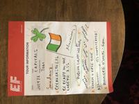
We started the day by visiting St. Patrick's Cathedral. I felt so weird, most of the kids on the trip were coming because they were either wealthy, or they were in an AP History class, me and my "Squad"? We came to see the world, we saved up money to explore what the world offers, so it was always funny that our tour guides would ask things like "Who here knows who Johnathan Swift is?" and all of us would have no clue, but still were interested to learn regardless of not having any prior knowledge.

 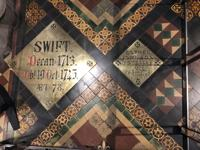
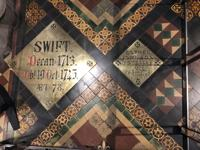
But after the cathedral, we went and took a trip through Pheonix Park. We drive by the US Embassy and got a view of the whole city of Dublin! Plus we got ice cream!!!
Later we drove back to Dublin at around noon CET, and split up near St. Stephen's Green, a park in the downtown area and were told we could explore the shops and stores nearby. Heather and I split up from Katie and Rei (They went to who knows where) but Heather and I went to see a museum where they had bog bodies and their stories on display. I think they freaked her out a bit so we ended up taking a break outside the museum and after relaxing a bit we went to explore the shops nearby. To me, not being a shopping person, I found the park St. Stephen's Greens absolutely beautiful and it was right next to the city square. So we went and explored after we got some Coffee! (I was a hardcore coffee addict at the time...)

 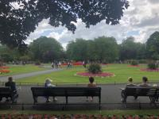
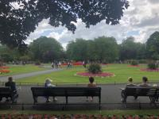

====Check spelling after this===
After Dinner, we explored downtown Dublin some more. I also tried ordering Starbucks at one point with my partner numbers, but it turns out that they're not international... But the girl who took my order was super sweet and after we ended up striking a conversation about work in general she was so nice and gave me everything for free. After exploring some shops and lounging around in town for a couple hours, we headed back to the hotel for the night.
July 29, 2019
First thing in the morning, we were given another famous Tom poster for the day.
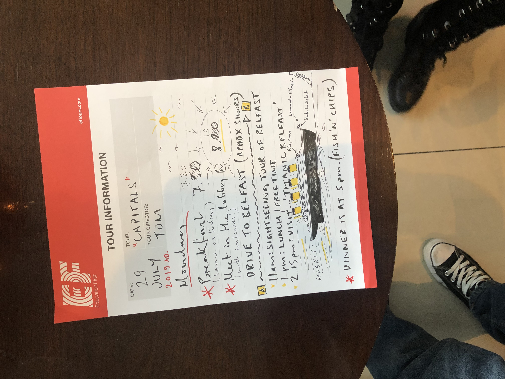
The day started with a long but beautiful drive around the Ireland coast. Pretty much the whole drive consisted of Heather and I, falling asleep, and waking up to pretty awesome scenery and views.
However, the day took an interesting turn when we reached the border of the Republic of Ireland, and Northern Ireland. During that time, Brexit was a major issue in the UK. Upon arriving at the border we were guided by a man who was unjustly arrested and imprisoned for his beliefs. He told us his story of leading hunger strikes in the prisons and working with the local civil rights organizations against the oppressive English at the time. Seeing the whole border separated by a wall that closed every night to keep conflicts down really made me thankful at the time to be an American. Although in America, of course not everything's perfect, not everyone is free of prejudice, it makes me thankful that I live in a country where it's at least easier to voice those concerns and do something about them.


After that we were kind of shaken up by the stories of the history of violence at the border, so we didn't really explore much until we got to the Titanic museum in Belfast. There we explored the museum and got fish and chips afterwards for dinner. (I swear I love fish frys, I would be so happy to live in Ireland just because of the food by the coast).


July 30, 2019
This morning we woke up and found out we were going on a huge road trip. Basically a circle around Northern Ireland all the way around the coast.
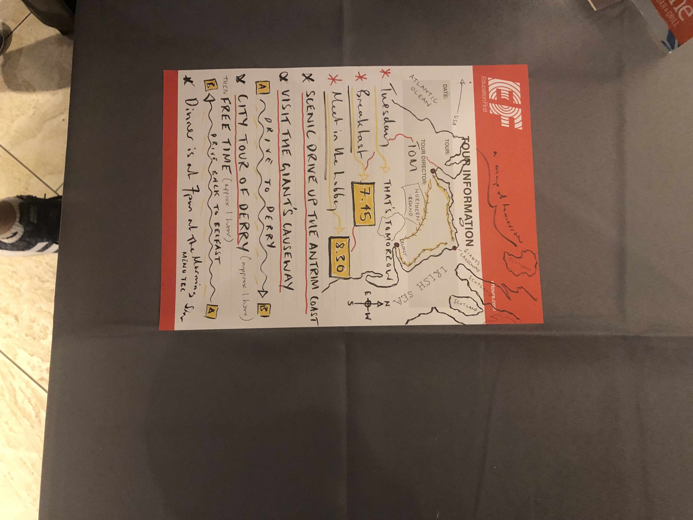
First we started heading to a place called "Giant's Causeway", but on the way we took a short break at Carrickfergus Castle and learned a bit about the History of it.
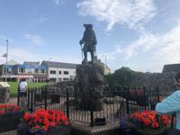


Later, when we arrived at the Giant's Causeway, we split into groups and got to explore.
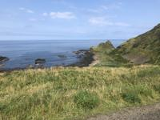


 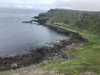
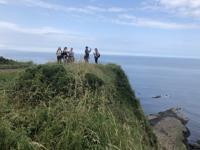
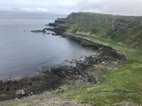
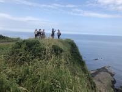
After taking a lunch break and relaxing from the endless hiking through the bluffs, we headed on towards LondonDerry (or Derry). We learned about the ageless conflict around the towns name and ventured around (Zerby, heather and I were all playing pokemon go here, there was a ton of stuff).
July 31, 2019
I ended up waking up kinda late... nobody in our room was really morning people, so we ended up being woken up by Heather calling me to get my ass downstairs in the hotel lobby. We had to catch a ferry to head to Scotland... (We kinda missed breakfast since we were late and complained the whole way to the ferry station).
On the Ferry luckily and at the station there was coffee, food, and snacks to buy, so we were content in the end. I remember vaguely I got a chocolate muffin and Heather stole it all. (Yes I'm gonna hold a grudge against that, I didn't eat breakfast, you did ;-;)
After arriving in Scotland, we headed straight for Edinburgh. We spent the day walking around town a bit but not a whole ton happened other then just sightseeing
August 1, 2019
First thing in the morning, we got the opportunity to explore more of Edinburgh!

 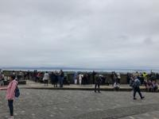
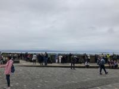
 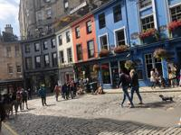
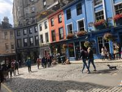
We had to hop a train though to head down to London. So after exploring we basically napped the whole ride after tom treated us to tea cakes and Ben let me try his Butterbeer drink from a Harry Potter store.
We arrived in London late at night and basically headed straight to the hotel we had there.
August 2, 2019
When morning came, we began with a tour of London and visiting Big Ben (It was under construction though so it wasn't as glamorous as normal...) But we also got to see the changing of the royal guard! On the way to the Palace where they do that, we stopped at a Pret-a-Porter and grabbed snacks. I realized then and there how much of an American I am, I bought a 2 liter bottle of diet soda because it was on sale rather then an 8oz can or bottle. And also a huge bag of chips (again on sale) and two sandwiches. I felt dumb at first when we were watching the Guard rotation because I was standing there with a giant bottle of soda and Heather next to me with a huge bag of chips and us just pigging out in London.

After that we split into the people going to Windsor Castle and us who were going to the tower of London. Before going to the tower, our group scoped at Borough Market to grab some lunch and explore the markets in London (The food is so good)


When we got to the Tower of London, IT WAS AWESOME. The history there was not only awesome, but just everything, the guards were so funny and nice. They were super social and more then willing to tell you anything you wanted to know. Also The Ravenmaster's a is a cool guy.
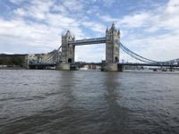

 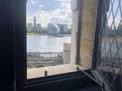
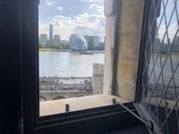

Later that night, we explored Piccadilly Square and visited Taylor Street (Rei insisted) and just got to see the night life of the city.
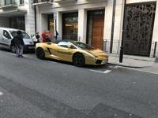


August 3, 2019
Being that it was the last day if the trip, Heather and I decided to visit the museums and take the day slow after all the nonstop moving around of the past week. We visited the British Museum and a couple others nearby. But we also visited the British Library. I thought it was pretty darn amazing to see the real books from Darwin, the real original music from Mozart and Chopin. Man I thought that was just amazing. Sadly they didn't really allow any photography, so I don't have pictures from there that are good.
Finally though, after a week of a lifetime, we headed back to the hotel for our last night of sleep before our plane ride home and our goodbyes to newfound friends.